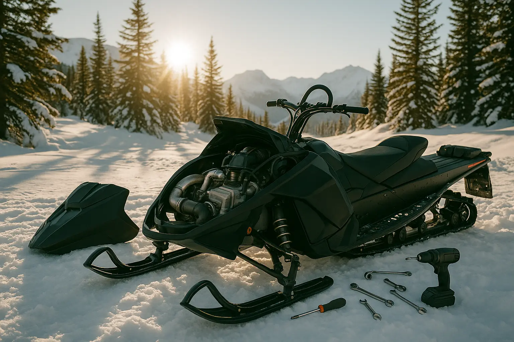
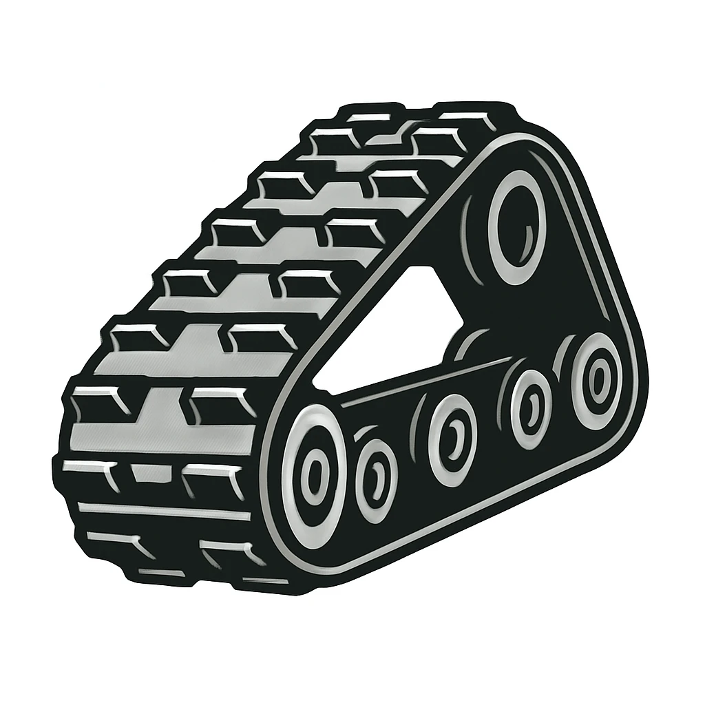
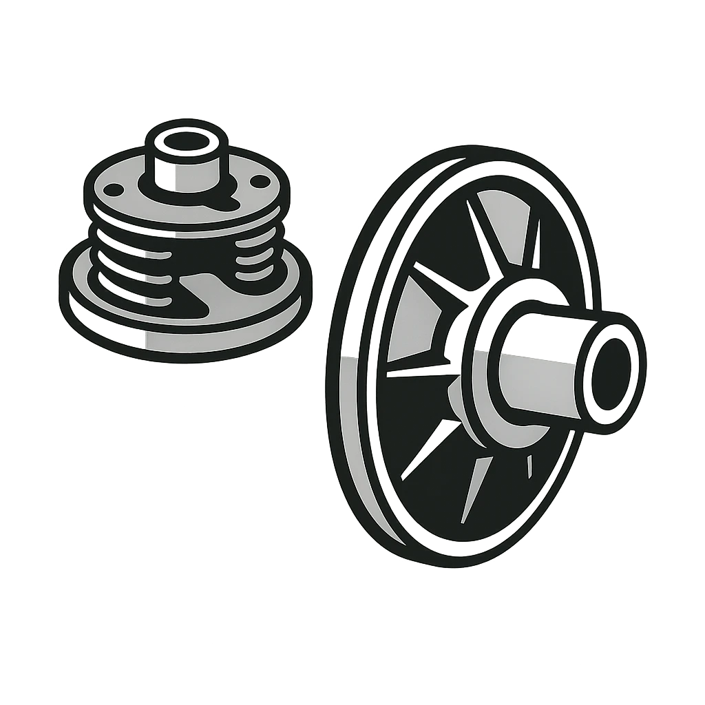

Track Your Snowmobile Maintenance

- 🛠 Log and view past maintenance
- 📅 Filter services by snowmobile and date
- 📈 Visual history of repairs and upgrades
How It Works
- Select your snowmobile model
- Add maintenance entries with notes and dates
- Review your history anytime
“SledLog keeps my maintenance records super organized. Never going back to paper notes again!”
— Jess, Backcountry Rider
Recent Maintenance Logs
- 07/16/25 – Oil change – Polaris 850
-  07/10/25 – Track inspection – Ski-Doo Summit
-  07/05/25 – Clutch adjustment – Polaris 850